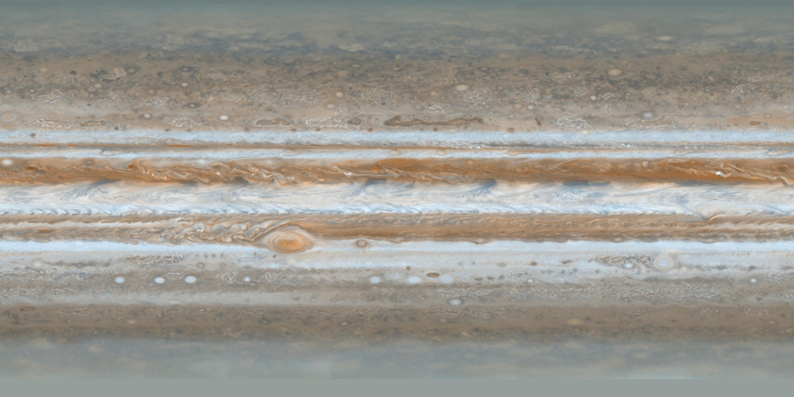
Jupiter cloud map
PIA07782 · Dated cloud mosaic
Cloud stripes and storms wrap around Jupiter. This map records the clouds seen in December 2000.
NASA/JPL/Space Science Institute
Official source and caption
Processing, placement and reuse
Imaging: Two-filter near-infrared/blue colour mosaic approximating visible colour; full-extent cylindrical map, no labels or grid in this file.
Observed: 2000-12-11/2000-12-12
Use: Preferred cloud-skin candidate. Planetocentric latitude. Companion axis reference is retained separately. Confirm the longitude system, seam and runtime UV orientation before placing markers. Atmospheric features drift; this is not fixed solid terrain.
Reuse: NASA/JPL educational and informational image-use permission; preserve the full per-image credit, respect separately identified rights, and imply no endorsement. This is not a blanket CC licence or a claim that all partner contributions are public domain.
Reuse policy / licence
Reuse policy / licence
Prepared: 2048 × 1024; 297,137 bytes. Prepared JPEG
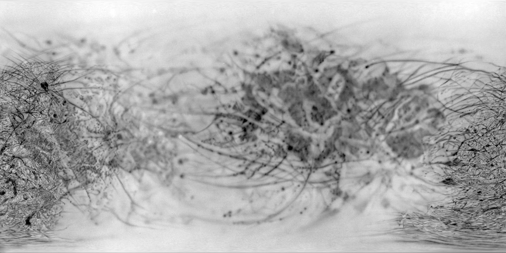
Europa Voyager mosaic
JPL jup2vss2 · Cleaned grayscale mosaic
Spacecraft pictures show lines and markings across Europa's icy surface. This map shows brightness, not height.
Caltech/JPL/USGS
Official source and caption
Processing, placement and reuse
Imaging: Publisher's cleaned-up grayscale Voyager mosaic; uneven spatial resolution and baked illumination.
Observed: Not specified by caption
Use: Provisional globe candidate at native 1440 x 720; do not upscale or invent colour. Landing page does not specify longitude origin/direction or control network. Verify at least Pwyll and Tyre against an authoritative coordinate reference before integration. Do not derive elevation from brightness.
Reuse: NASA/JPL educational and informational image-use permission; preserve the full per-image credit, respect separately identified rights, and imply no endorsement. This is not a blanket CC licence or a claim that all partner contributions are public domain.
Reuse policy / licence
Reuse policy / licence
Prepared: 1440 × 720; 161,634 bytes. Prepared JPEG
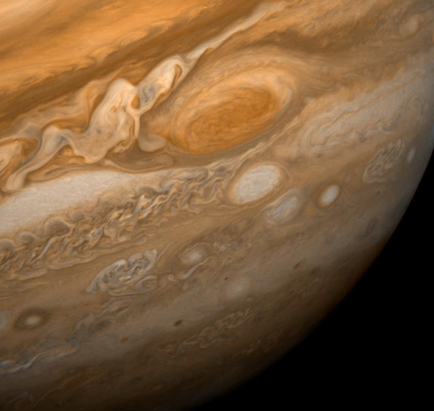
The Great Red Spot
PIA00014 · Archive colour image
The big oval is a swirling storm. It is called the Great Red Spot.
NASA/JPL
Official source and caption
Processing, placement and reuse
Imaging: Archive colour image; exact colour calibration not specified by this caption.
Observed: 1979-02-25
Use: Recognisable primary subject. Match any marker to the dated texture's storm, not a modern longitude. Avoid repeating obsolete size/age superlatives from historical captions.
Reuse: NASA/JPL educational and informational image-use permission; preserve the full per-image credit, respect separately identified rights, and imply no endorsement. This is not a blanket CC licence or a claim that all partner contributions are public domain.
Reuse policy / licence
Reuse policy / licence
Prepared: 895 × 848; 63,722 bytes. Prepared JPEG
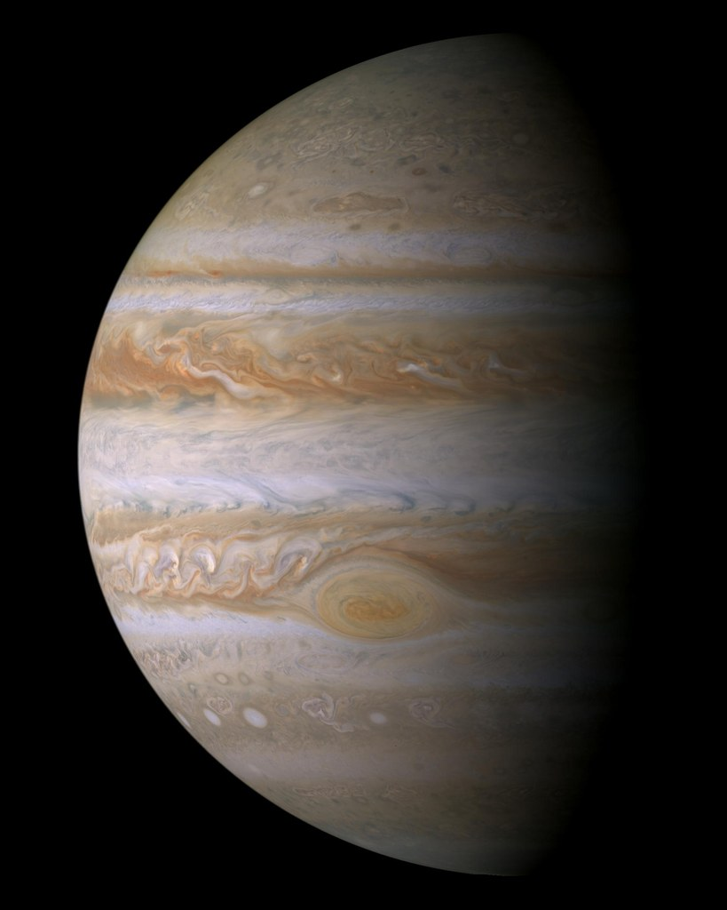
Stripes of clouds
PIA04866 · Visible-colour mosaic
Jupiter wears light and dark stripes. They are clouds, with winds blowing through them.
NASA/JPL/Space Science Institute
Official source and caption
Processing, placement and reuse
Imaging: 27-frame red/green/blue mosaic approximating human-visible colour.
Observed: 2000-12-29
Use: Good whole-world introduction and band subject. Not a landable surface or a single point feature. Archive release dates differ across republished pages; this record uses the Photojournal entry.
Reuse: NASA/JPL educational and informational image-use permission; preserve the full per-image credit, respect separately identified rights, and imply no endorsement. This is not a blanket CC licence or a claim that all partner contributions are public domain.
Reuse policy / licence
Reuse policy / licence
Prepared: 819 × 1024; 68,871 bytes. Prepared JPEG
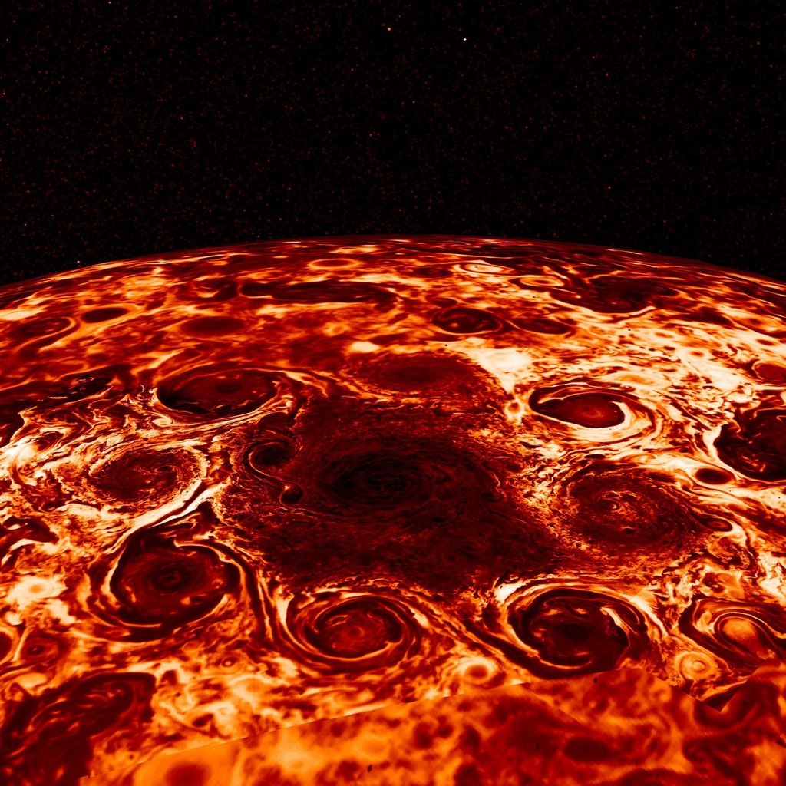
Storms around the pole
PIA22335 · Infrared / false colour
A heat-seeing camera reveals storms around Jupiter's north pole. These colours help us see heat.
NASA/JPL-Caltech/SwRI/ASI/INAF/JIRAM
Official source and caption
Processing, placement and reuse
Imaging: Infrared thermal composite; false colours represent radiant heat, not visible red/yellow clouds.
Observed: Not specified by caption
Use: Nine cyclones are shown in this historical product. Do not promise a current storm count or treat the heat image as the visible globe texture. Individual acquisition dates are not supplied by the caption.
Reuse: NASA/JPL educational and informational image-use permission; preserve the full per-image credit, respect separately identified rights, and imply no endorsement. This is not a blanket CC licence or a claim that all partner contributions are public domain.
Reuse policy / licence
Reuse policy / licence
Prepared: 1024 × 1024; 291,230 bytes. Prepared JPEG
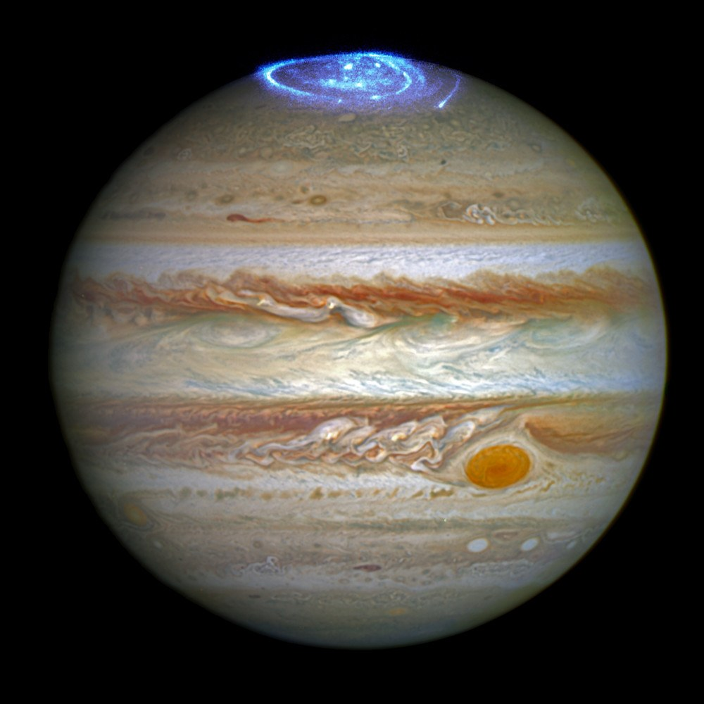
Glowing polar lights
heic1613a · UV + optical composite
Jupiter has glowing polar lights. This picture adds ultraviolet light that our eyes cannot see.
NASA, ESA
Official source and caption
Processing, placement and reuse
Imaging: Composite combining optical and ultraviolet observations from different years; auroral colour is a visualisation of invisible ultraviolet light.
Observed: 2014 optical + 2016 ultraviolet
Use: Show as an archive phenomenon, never as a simultaneous naked-eye photograph or ordinary blue paint on the planet. Preserve full NASA, ESA credit and CC BY 4.0/source links.
Reuse: CC BY 4.0 under ESA/Hubble policy; retain the complete credit beside the image and link the source and licence. Derivatives here are resizing/recompression only.
Reuse policy / licence
Reuse policy / licence
Prepared: 1000 × 1000; 108,369 bytes. Prepared JPEG
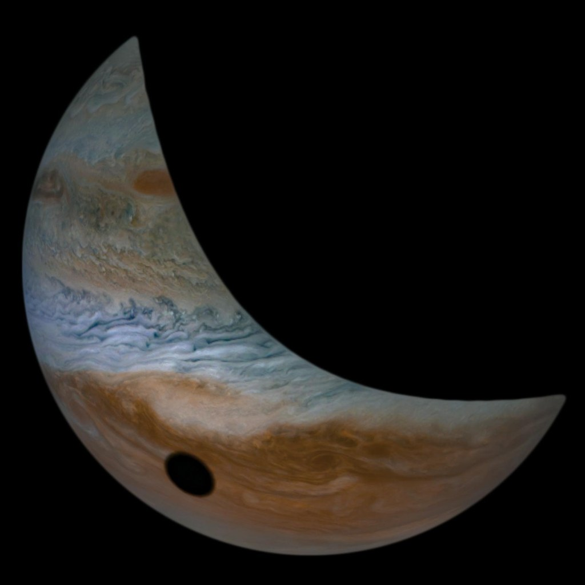
A moon's shadow
PIA23602 · Enhanced colour
The dark circle is a shadow. Jupiter's moon Io blocked the sunlight there.
Image data: NASA/JPL-Caltech/SwRI/MSSS, Image processing by Tanya Oleksuik, © CC BY
Official source and caption
Processing, placement and reuse
Imaging: Enhanced-colour spacecraft image processed by Tanya Oleksuik.
Observed: 2019-09-12 (as dated by publisher)
Use: Strong visual subject, conditional production licence metadata. The shadow is a transient event, not a crater or a ring marker. Retain the publisher's stated observation date and time zone; no UTC conversion has been inferred here.
Reuse: The publisher explicitly credits Tanya Oleksuik and states CC BY, without a version or licence link. Preserve the exact credit and source statement. Do not relabel this NASA-only or silently assign a CC version; confirm the licence version/link before production promotion.
Reuse policy / licence
Prepared: 1024 × 1024; 57,293 bytes. Prepared JPEG
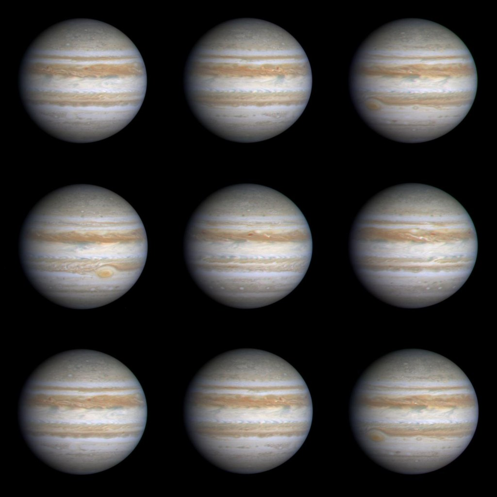
Jupiter turns
PIA02825 · Time sequence
These pictures show the same Jupiter turning. Watch the red storm move around the planet.
NASA/JPL/University of Arizona
Official source and caption
Processing, placement and reuse
Imaging: Nine true-colour frames taken at different times, arranged as a sequence; not nine planets.
Observed: 2000-10-22/2000-10-23
Use: Prefer for an optional rotation explanation. A nine-panel image is weak as a tiny badge; do not force it into a six-point surface hunt or present it as one instant.
Reuse: NASA/JPL educational and informational image-use permission; preserve the full per-image credit, respect separately identified rights, and imply no endorsement. This is not a blanket CC licence or a claim that all partner contributions are public domain.
Reuse policy / licence
Reuse policy / licence
Prepared: 1024 × 1024; 92,144 bytes. Prepared JPEG
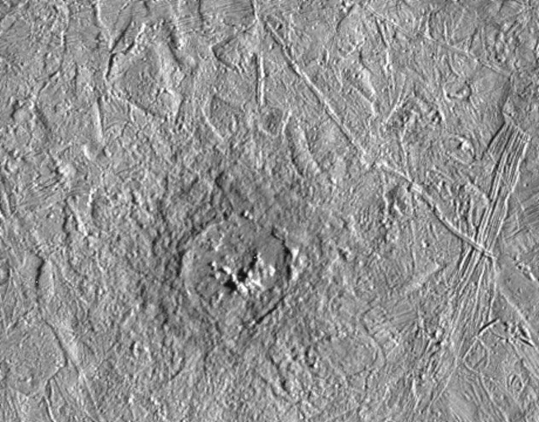
Pwyll crater
PIA00586 · Monochrome mosaic
An impact made this crater in Europa's ice. Material from below was thrown around it.
NASA/JPL/ASU
Official source and caption
Processing, placement and reuse
Imaging: Two-image monochrome mosaic.
Observed: 1997-02-20
Use: Useful named landmark and texture-alignment reference. Caption coordinates are legacy published values, not a newly verified modern control point.
Reuse: NASA/JPL educational and informational image-use permission; preserve the full per-image credit, respect separately identified rights, and imply no endorsement. This is not a blanket CC licence or a claim that all partner contributions are public domain.
Reuse policy / licence
Reuse policy / licence
Prepared: 920 × 720; 139,425 bytes. Prepared JPEG
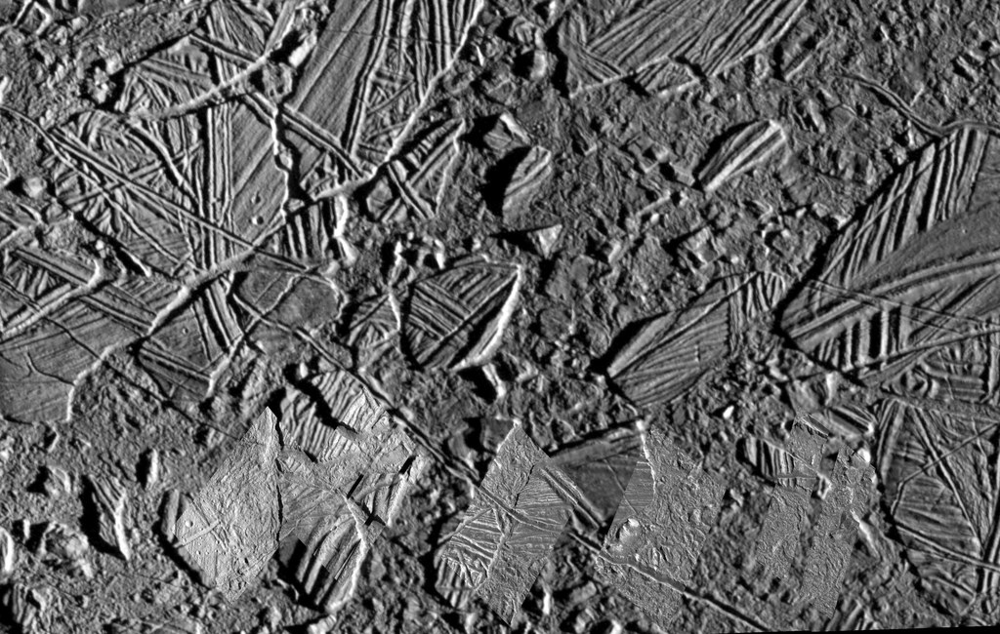
Jumbled ice at Conamara
PIA01403 · Mixed-date / mixed-resolution mosaic
These pieces of ice moved and turned. They look like a jumbled puzzle.
NASA/JPL
Official source and caption
Processing, placement and reuse
Imaging: Monochrome mosaic mixing context imagery and higher-resolution insets from different encounters.
Observed: 1997-02 context + 1997-12-16 insets
Use: Do not describe this as a single exposure or proof of an exposed ocean. The physical material below the blocks is interpreted, not directly photographed as open water.
Reuse: NASA/JPL educational and informational image-use permission; preserve the full per-image credit, respect separately identified rights, and imply no endorsement. This is not a blanket CC licence or a claim that all partner contributions are public domain.
Reuse policy / licence
Reuse policy / licence
Prepared: 1024 × 650; 241,687 bytes. Prepared JPEG
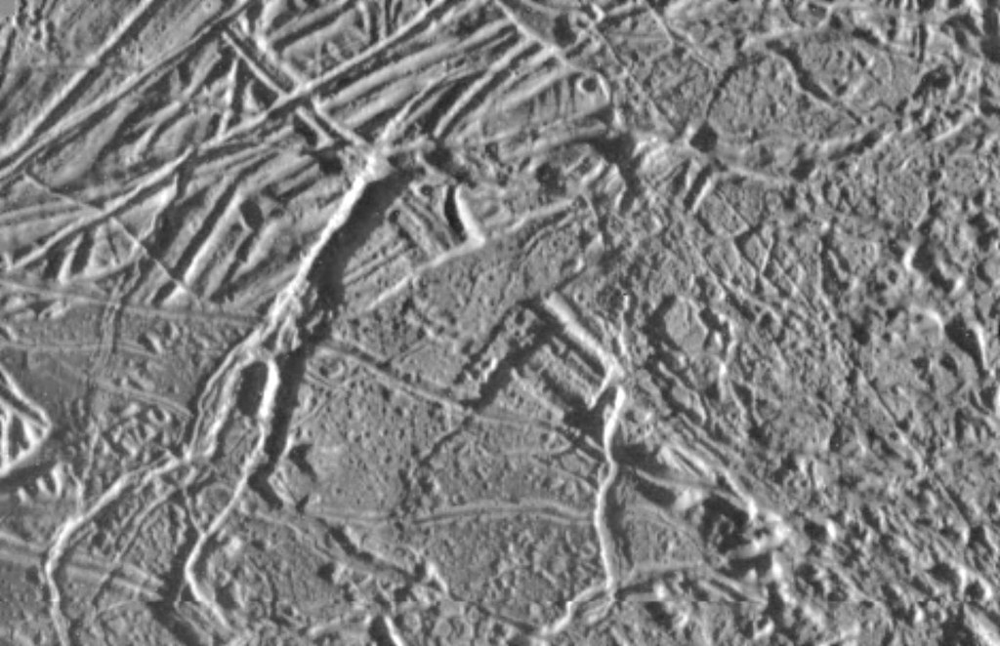
Crossing icy ridges
PIA00544 · Monochrome
Long ridges cross Europa's icy surface. Some lines cut across older lines.
NASA/JPL/University of Arizona
Official source and caption
Processing, placement and reuse
Imaging: Monochrome high-resolution surface image.
Observed: Galileo orbit 4; date not specified in caption
Use: Region, not a named permanent point. Do not repeat the historical 'highest resolution ever' claim as current fact.
Reuse: NASA/JPL educational and informational image-use permission; preserve the full per-image credit, respect separately identified rights, and imply no endorsement. This is not a blanket CC licence or a claim that all partner contributions are public domain.
Reuse policy / licence
Reuse policy / licence
Prepared: 1024 × 662; 152,462 bytes. Prepared JPEG
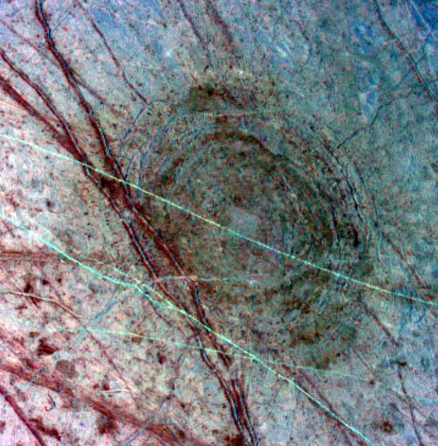
Tyre's impact rings
PIA00702 · False-colour mosaic
An impact left rings in Europa's ice. The colours are changed to help show different materials.
NASA/JPL/University of Arizona
Official source and caption
Processing, placement and reuse
Imaging: Three-image false-colour composite highlighting shape and composition differences.
Observed: 1997-04-04
Use: Named landmark. Do not mistake these surface rings for orbiting planetary rings. Preserve false-colour explanation.
Reuse: NASA/JPL educational and informational image-use permission; preserve the full per-image credit, respect separately identified rights, and imply no endorsement. This is not a blanket CC licence or a claim that all partner contributions are public domain.
Reuse policy / licence
Reuse policy / licence
Prepared: 719 × 732; 137,371 bytes. Prepared JPEG
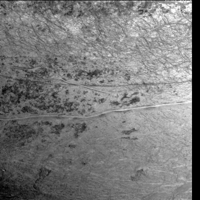
The bright Agenor band
PIA00877 · Monochrome
A bright band stretches across the ice. Its name is Agenor Linea.
NASA/JPL
Official source and caption
Processing, placement and reuse
Imaging: Monochrome regional surface image.
Observed: 1997-02-20
Use: Broad band shown in a low-resolution regional context. Coordinates describe the image centre; resolve a representative point on the actual band before authoring a marker.
Reuse: NASA/JPL educational and informational image-use permission; preserve the full per-image credit, respect separately identified rights, and imply no endorsement. This is not a blanket CC licence or a claim that all partner contributions are public domain.
Reuse policy / licence
Reuse policy / licence
Prepared: 400 × 400; 41,139 bytes. Prepared JPEG
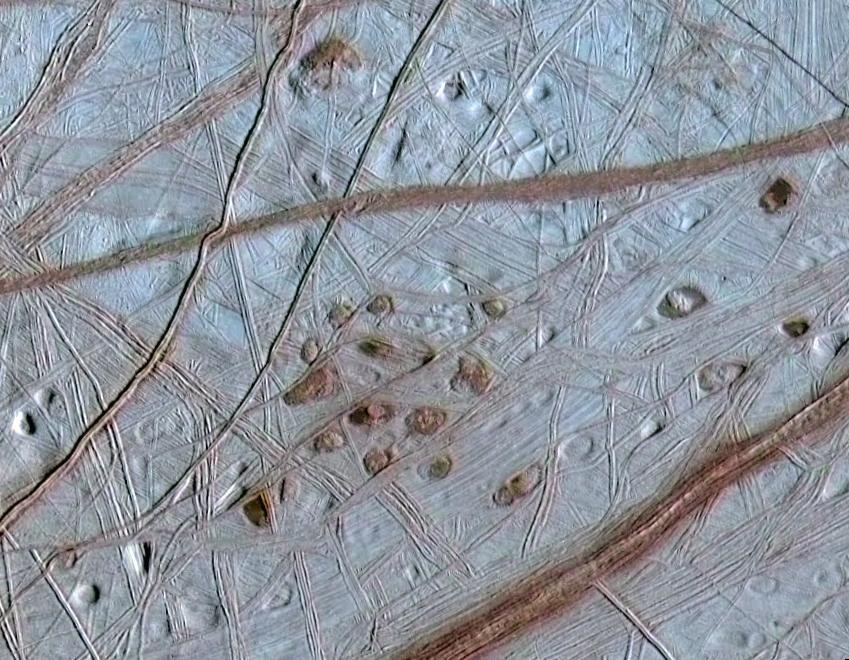
Europa's icy freckles
PIA03878 · Mixed-date colour composite
Dark spots and shallow pits dot the ice. Scientists call the dark spots freckles.
NASA/JPL/University of Arizona/University of Colorado
Official source and caption
Processing, placement and reuse
Imaging: Composite combining higher-resolution detail with lower-resolution colour from a different encounter; not a single exposure. Colour calibration not specified by this caption.
Observed: 1998-05-31 detail + 1996-06-28 colour
Use: A distinct surface subject, replacing the overlapping Thera/Thrace context candidate. Caption places this in the northern hemisphere but gives no centre coordinates; research the original observation footprint before marker placement. Ice upwelling is an interpretation, not a directly photographed exposed ocean or evidence of life.
Reuse: NASA/JPL educational and informational image-use permission; preserve the full per-image credit, respect separately identified rights, and imply no endorsement. This is not a blanket CC licence or a claim that all partner contributions are public domain.
Reuse policy / licence
Reuse policy / licence
Prepared: 849 × 660; 155,529 bytes. Prepared JPEG